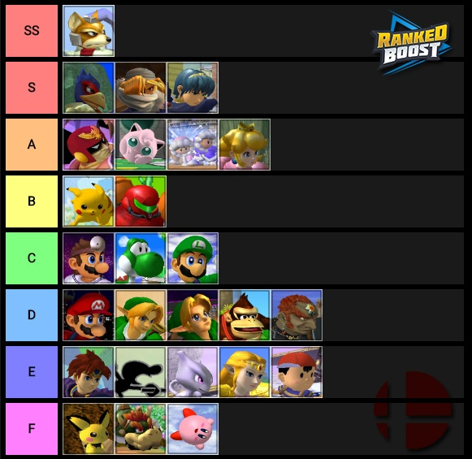

tierlist des meilleurs personnages en compétition

image des 5 "dieux"
compétition
Malgrez la réputation de Smash Bros, étant vue comme un simple jeu récréatif, plusieurs admirateurs ont vites commencer à apprécier sont rythme rapide qui lui a permis de développer un aspect compétitif. À ce jour, il est possible de voir SSBM dans des évènements "Esports" (electronic sport). L'histoire compétitive de Smash est séparée en quatre parties : Début de l'histoire (2001-2004), l'âge d'or(2004-2008), l’âge sombre ou l'ère des cinq dieux(2008-2013) et finalement; l'âge platine (2013 à 2018). L'aspect compétitif de smash est très bien représenté par les "5 gods" soit : Armada, Hungrybox, Mango, Mew2King et PPMD. En effet, ses cinq joueurs ont été les plus dominants de toute l'histoire compétitive de SSBM. Entre 2008 et 2013, ils ont gagné presque tous les tournois auxquels au moins deux d'entre eux étaient présents.